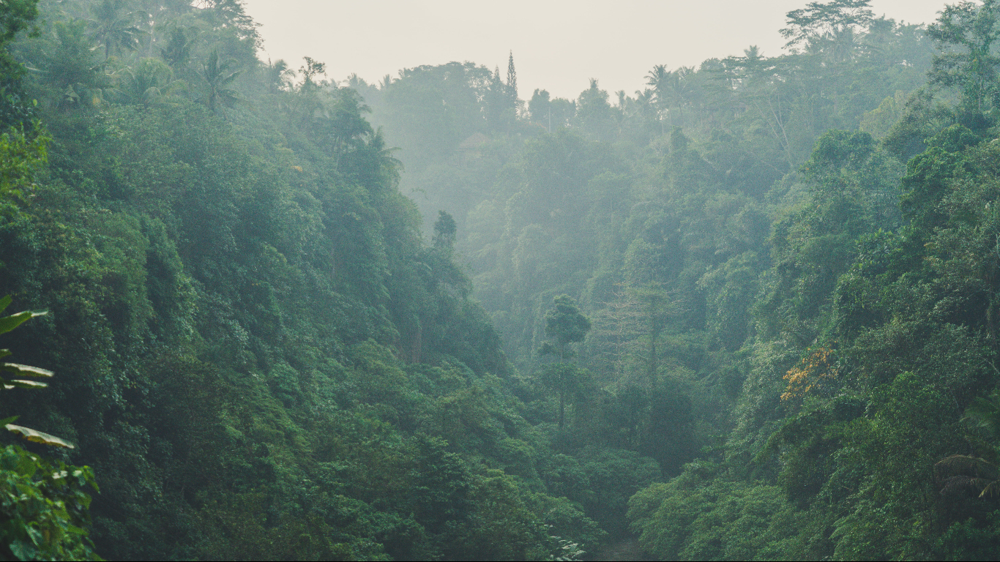

WISATA
MONKEY FOREST UBUD
Hutan Monyet Ubud, adalah suaka dan habitat alami kera ekor panjang Bali. Terletak di Padangtegal Ubud, Bali. Sekitar 1049 monyet tinggal di cagar alam ini.

ADA APA DI MONKEY FOREST?
Wisata Monkey Forest Ubud Merupakan Kawasan Hutan Lindung dan di dalam hutan ini, terdapat pura sakral umat Hindu Bali, bernama Pura Dalem Agung Padangtegal.

Wisata Lain di Ubud?
Objek wisata Ubud Bali sangat terkenal sampai kemancanegara. Karena Ubud Bali menawarkan keunikan seni, dan budaya serta keindahan alam.